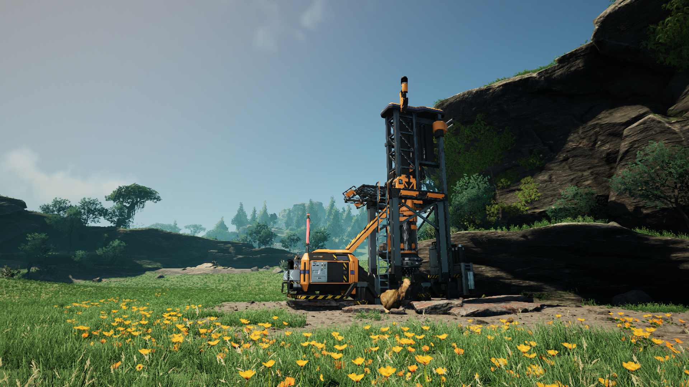
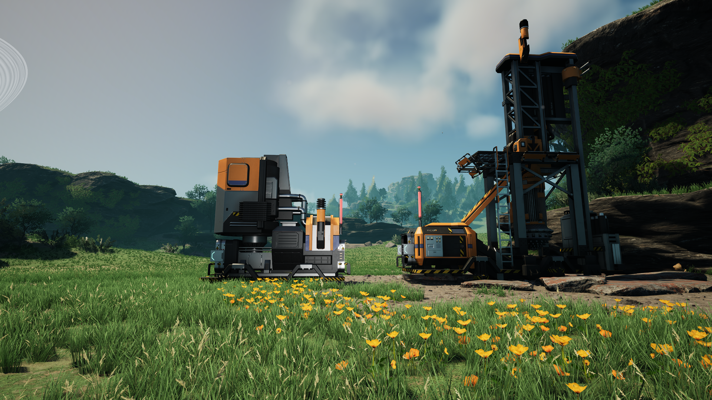
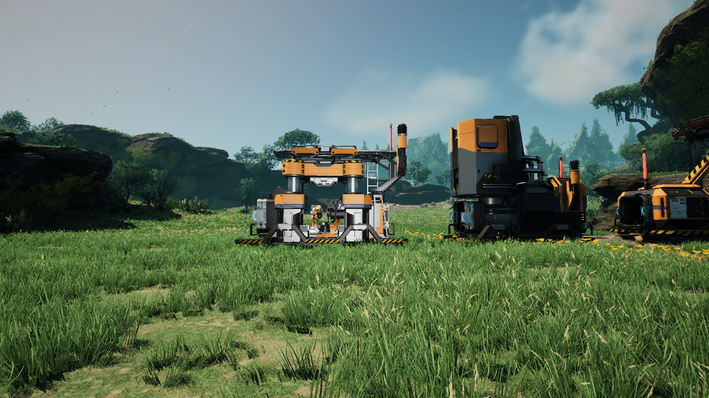
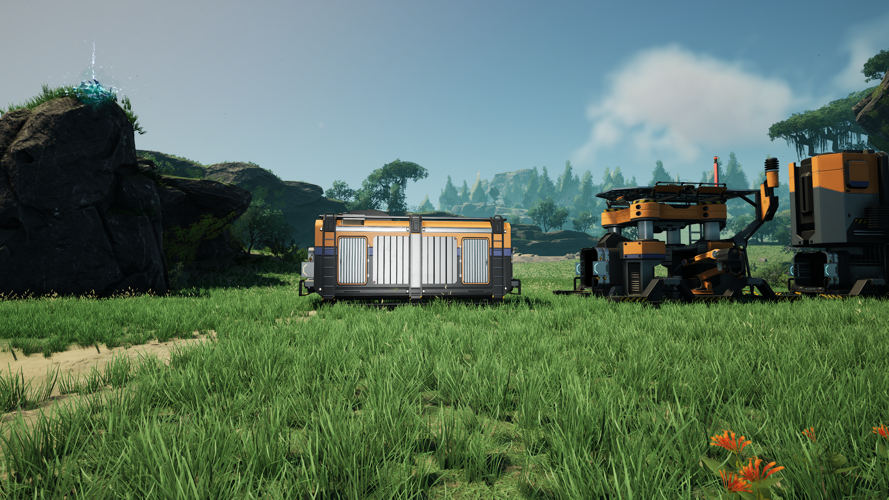

First Automation
Are you being efficient? While efficiency is not required it is strongly suggested. After chiseling away and manually crafting required items you may wish to build your first assembly line. Here we will cover how to go from iron-ore to iron plates.

3 Easy steps to being more productive.
Step 1
Place miner, smelter, constructor in a straight line. Be sure to select each machine using E and set the desired item you want to create.



